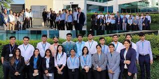
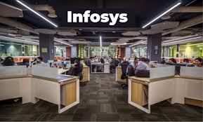
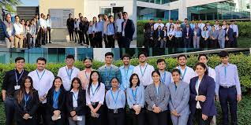
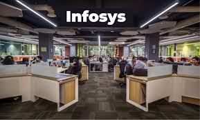

Infosys, founded in 1981 by N.R. Narayana Murthy and a group of engineers, has grown into one of India's largest and most influential IT services companies. Headquartered in Bangalore, India, Infosys operates globally, with a presence in over 46 countries. The company offers a wide range of services, including software development, maintenance, system integration, consulting, and business process outsourcing, serving clients across various industries. Infosys is known for its commitment to innovation, investing in emerging technologies like artificial intelligence, machine learning, blockchain, and cloud computing. It upholds a strong corporate culture centered on ethics, governance, and transparency. Financially, Infosys is a publicly traded company with a history of strong performance in terms of revenue and market capitalization. The company is also dedicated to sustainability and corporate social responsibility, actively engaging in initiatives to reduce its carbon footprint and contribute to social welfare. Despite challenges in the competitive IT landscape and changing immigration policies, Infosys continues to be a global leader in technology and consulting services, exemplifying Indian IT excellence.